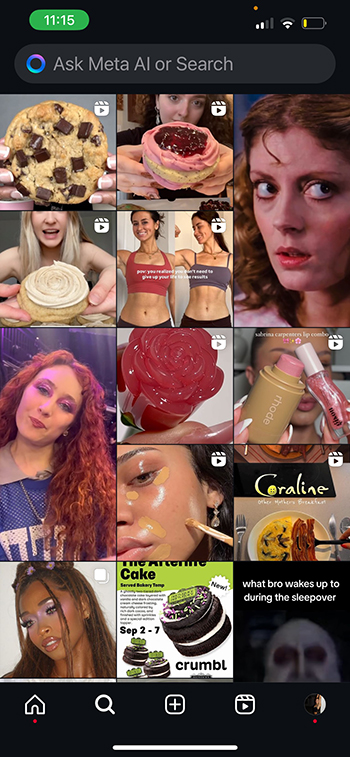

the feed
Ray
Sarah
Gianna
Marc
Hazel
Nate
Mia
Katie
My sister so casually meeting James Charles and sending it to our family groupchat. One of the more interesting screenshots from my week.
Ranting to my sister gianna about my week and she tells me about her new life in new york. As you can see we had a lot to say.
Me and my friend Alice decided to see Wicked as a treat for our long first few weeks. Had to make sure we get good seats (we did hehehe)
This weekend my friend Alice and I decided to treat ourselves and go see wicked. We went as Glinda and Elphaba and it was sooo good.
This is the app “letterboxd” where you can rate movies and give reviews with friends. I was pregaming Beetlejuice 2 with the first one and forgot how much I loved it.
Finally got to see Beetlejuice beetlejuice. Very fun very cute very halloween!
I love designing my home screen and I was listening to Ryan Beatty at this moment. I also have Pinterest widgets that change every hour and I like how these all lined up.

As we can see, I love a good crumbl cookie reveiw, but i love how we can examine my passions in one random screenshot
If you were to ask my friends my favorite musical they would say mamma mia. This is actually not true but I will play the music until the day I die.
Finally got a feature on the @usfca account and had to document it. I <3 theta and these girls and this club day was successful!
Caught me getting hype for recruitment with the best song ever. Does it have anything to do with sororities? No. idc!!